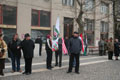
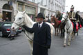
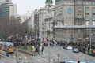

2007.02.12., hétfõ
tomcat
blog
droidzóna
levrov
Megint egyetlen gép van a családban, mert Athina gépébõl e csodás reggelen kirohadt az alaplap. Ilyen jószág ez a PC, néha se szó, se beszéd, megdöglik, és akkor lészen nagy siránkozás és bazmegezés, könyékig koszos vaslemezek között turkálás, világ végére visszavivés, pult mögül lenézõ mosoly bezsebelés, természetesen a helyszínen tökéletesen mûködés. Amióta könyvet írtam róla, megvan a véleményem a PC-rõl. Elõtte is megvolt, csak nem ennyire.
Tegnap kedves megemlékezésen voltam, vitéz nagybányai Horthy Miklós, Magyarország Kormányzója, Legfõbb Hadúr halálának 50. évfordulója alkalmából. Igaz, errõl a szombati blogban már szóltam. Mintegy ezerötszázan gyûltünk össze a Szent István Bazilikában rendezett ökomenikus szentmisére, majd vonultunk át a Petõfi-szoborhoz a XX. század legkiválóbb magyar államférfijére emlékezve. Miért a legkiválóbb? Nos, ezt kicsit hosszú lenne részletesen kifejteni, különösen egy olyan korban, ahol a nagy emberek tetteivel való kicsinyes kötözködés vitának számít, és amihez mindenkinek végtelen joga van. Ha pedig az illetõ nem Izrael állam megteremtésében szerzett elévülhetetlen érdemeket, akkor pláne nem szabad még beszélni sem róla. Horthy Miklósra éppen ezért nem emlékeznek meg sehol, egy büdös szót sem szólnak róla a médiában, nincs róla megemlékezés az iskolákban, és senki sem visz virágot kenderesi sírjára, leszámítva azt a néhány ezer magyart, akik szombaton ott voltak a tizenötmillióból. Egy mondatban összefoglalva, kedves Olvasóm, bajosan nevezhetnéd magad ma magyarnak, ha Horthy nem teszi, amit tennie kell, nem beszélhetnél Magyarországról sem, legfeljebb csak a történelemórán, de akkor is Madarsko-nak neveznéd, és Jan Szlavomir Sztrcskvcs lenne a neved, vagy valami hasonló. Nem lenne már magyar nyelv, magyar kultúra, nem lenne magyar irodalom, nem lenne március 15-e, és nem lenne zsidóság sem, mert valamennyi kelet-európai német csatlósország vezetõi közül egyedül Horthy Miklós volt képes megakadályozni a holocaust végrehajtását, egészen, amíg õt magát is félre nem állították 1944-ben. Ha mindez nem lenne elég, a magam részérõl annyit tennék hozzá, hogy én magam Horthy Miklós emlékiratainak olvastán értettem meg, mit jelent magyarnak lenni, azon túl, hogy itt lakom. Soha olyan makulátlan tiszta becsületû ember nem vezette Magyarországot, mint a Kormányzó. Szégyen, hogy agyonhallgatják nem csak emlékét, de még a róla szóló megemlékezést is, politikáját pedig Kádáréhoz hasonló zsákutcának minõsítik, és megtagadják szobrának felállítását. Soha egyetlen más ember sem volt pedig, legalábbis Hunyadi Mátyás óta, akinek arcképét szeretettel kitették szinte minden magyar házban, és akire egész nemzetünk egy emberként felnézett!
Nézzétek, mi volt a megemlékezésen.
A Bazilika bejáratánál nem sokan voltak, amikor megérkeztem
A kapuban székely szõttesek és egyéb hazafias termékek voltak kaphatóak
Tabló a Kormányzóról
Nem csoda, hogy odakint nem volt senki, hiszen mindenki bent szorongott. A szentmise alatt egy almát sem lehetett volna leejteni.
Az ökomenikus mise katolikus részérõl lemaradtam, de a református résznél már ott voltam. A celebráló lelkész - felírtam volna a nevét is, ha a hetes buszra emlékeztetõ tömegben be tudok nyúlni a zsebembe a tollért - felidézte, mit is írt Horthy Miklós emlékirataiban Magyarországról.
"Gondolataim az Atlanti-óceán partjáról szüntelen haza-szállnak a Duna-Tisza partjaira, édes hazámba, melyet számomra a világ legszebb országa sem pótolhat. Itt naponta látom a tengert, eredeti élethivatásom annyira kedvelt életelemét, és gyönyörködöm benne. Mély a tenger és végtelen... De mélyebb szeretetem, mely szülõhazám-hoz fûz, és végtelenebb vágyódásom, mely a magyar földre és a magyar nép körébe vonz!"
Aztán ezt párhuzamba állította azzal, ahogy országunk mai vezetõi beszélnek Magyarországról, de mint mondta, ezt inkább nem idézi ezen a helyen, ebben a ruhában. Nem kellett sok magyarázat Horthy Miklós önvallomásához sem, melyben õszintén kijelentette, egész életében hazájáért tevékenykedett, ezt érezte kötelességének, s ennek tükörpárjához, mely így hangzik: "Hazudtunk reggel, délben és este..."
Nagy nehezen sikerült elõrébb furakodni, de sajnos így is csak az oldalhajóból kukucskálhattam az eseményeket. Történelmi zászlókat tartva különféle hagyományokat õrzõ katonai csoportok, tengerészek, folyamõrök, a Vitézi Rend tagjai álltak az oltár elõtt, tisztelegve példaképük emléke elõtt.
A hatvannégy történelmi vármegye zászlai
A szép szentmisét nemzeti imádságunk eléneklésével zártuk (mellesleg mi vagyunk az egyetlen nemzet, akik imádságot énekelnek himnusz gyanánt), majd a tömeg kiborult az utcára, útközben elfogyasztva a kapuban "Noé-pudingot" kínálgató muszlim diákok portékáját. Õk valami vallásközi békeprogram keretében keveredtek oda, sajnos a tömegben nem tudtam õket lefényképezni. Egyébiránt agyon kedvesek voltak, és állítólag a gyümölcsökbõl, magokból és mézbõl összeállított puding is nagyon finom volt.
Novák Elõdöt nemrég felmentették az illegális dobolás vádja alól, s a bíróság kimondta, hogy tulajdonképpen a közterületen való dobolás nem bûncselekmény, akkor sem, ha épp rohamrendõrök randalíroznak a környéken. Ezen felbátorodva most féltucat bûntársat hozott magával, és dobjaikkal õk vezették a menetet.
A Vitézi Rend tagjai elegáns díszmagyarban feszítettek

Az úgynevezett "Kossuth-tériek" is jelen voltak. Azért mondom, hogy "úgynevezett Kossuth-tériek", mert a libsi média mostanság így nevez mindenkit, aki valahogy így néz ki, és akirõl azt akarják sugallni, hogy "na, ezek hugyozták tönkre a Kossuth teret." A Kossuth-tériek pont olyanok, mint a futballhuligánok, senki sem tudja, kifélék-mifélék, de félni kell, mert jönnek, felbukkannak, és akkor oda a nyugalom.
Tömeg a Bazilika elõtt
Számtalan egyenruhát lehetett megfigyelni
Tengerészek és folyamõrök. Horthy Miklós 1993-as újratemetését veterán tengerészek eszközölték ki, Szimon Miklós, azóta sajnos szintén elhunyt tengerészkapitány kezdeményezésére. A temetés teljes egészében magánadakozásból valósult meg. Az Antall-kormány a cionista média nyomására nem merte képviseltetni magát az eseményen, és tudtommal támogatást sem nyújtott hozzá.

Vitéz Lófõ Kovács György Antal, a Horthy Miklós Társaság alelnöke, nyugdíjas tengerésztiszt
A Bazilikából kitódult tömeg menetté állt össze, és a József nádor téren keresztül a Belváros felé indult. Néhány rendõr végezte csak a biztosítást, de nem is volt szükség többre.
A József nádor téren gyalogos és lovas hagyományõrzõk álltak a menet élére

Az élen egy lovas nélküli, fehér pej lovat vezettek. Hasonlón vonult be Horthy Miklós 1919-ben Budapestre. A fehér ló ugyanis Magyarország lelkét szimbolizálja.
Gyalogos hagyományõrzõk
Pörzse Sándor lovon
Magyar lovas
A Vörösmarty téren. "Ezt nézd, apám, egy zsidó vezeti a menetet", súgta oda szervezõként sürgõ-forgó szobrász-bûntársam, Szilvási Peti mellettem elhaladtában. Az itt látható hölgyre célzott. Mellesleg Horthy Miklós újratemetésén is az egyik legnagyobb koszorú szalagjának felirata a következõképp hangzott: "Egy hálás zsidótól."
Bocskay-huszárok
Sima huszárok
Menet

Váci utca
Érkezés a Petõfi-szoborhoz

A tömeg már jóval ezer fõ fölé duzzadt
Arcok
Pörzse Sándor magyarnak öltözött
Szabó Gábor, a Jobbik pártigazgatója vezette fel a felszólalókat. Külön köszönetet mondott a szintén jelen lévõ Bencsik Andrásnak, a Demokrata fõszerkesztõjének, amiért lapjában meghirdette a megemlékezést.
Pörzse Sándor kezdte a beszédek sorát. Hosszan sorolta Horthy Miklós érdemeit, magasztalta erõfeszítéseit a trianoni békediktátum visszafordítására, majd hozzátette: "... míg késõbb ráébredt annak visszafordíthatatlanságára." Amint ezt kimondta, mögöttem idétlen, gúnyos röhögés csendült fel. Egy mobiltelefon csengõhangja volt. Ez vajon valamiféle jel volt, vagy véletlen?
Bogdán Péter, Kenderes polgármestere folytatta a beszédek sorát, felelevenítve falujuk leghíresebb szülöttének korát, s megköszönve neki mindazt, amit földbirtokosként szûkebb pátriájáért tett élete során. Kiemelte, hogy becsületességére mi sem jellemzõbb, mint hogy az 1920-ban 4200 kataszteri holdnyi Horthy-birtok 1944-ben is ugyanakkora volt, hiszen a Kormányzó nem a vagyonszerzés eszközének tekintette pozícióját.
Zászló, mint hangulati elem
Zagyva György Gyula, a HVIM elnöke volt a harmadik felszólaló. Kicsit mintha meglepõdött volna ezen, és egy darabig nem találta a szavakat, aztán éltette egy kicsit a Kormányzó emlékét, és átadta a helyet a következõnek.
Egy egészen különleges ember lépett az emelvényre negyedikként: Világi József, a Horthy Miklós Történelmi Társaság vezetõségi tagja
- Szebb jövõt! - kiáltotta a mikrofonba a stramm öregúr, mire a tömeg nagyából egyszerre felelte ugyanezt a közelmúltban nemzeti körökben elterjedt köszöntést. Ám Világi úr szigorú arccal mérte végig az emlékezõket, és így folytatta.
- Szomorú vagyok, hogy nem fogadjátok a köszönésemet. Amikor gyerek voltam, a háború elõtt, ha felszálltam a villamosra, miután bedobtam a tantuszt a perselybe - mert rendes gyerek voltam - így köszöntöttem azokat, akik közé beléptem. S az utasok erre valamennyien felálltak, s azt felelték: Adjon Isten! Mert ez volt rá a válasz. Tehát akkor: Szebb jövõt!
A tömeg erre lelkesen visszakiáltott: Adjon Isten! Csak egy gyengébb elméjûnek nem sikerült a helyes válasz, az még most is a "Szebb jövõt" választ adta, de Világi úr nagyvonalúan eltekintett megfeddésétõl.
Helyette mesélt azokról az idõkrõl, amikor Õfõméltósága Horthy Miklós kormányozta a csonka Magyarországot. Beszélt arról, amikor még szüleivel a Vár oldalában lakott, s minden vasárnap édesapja felvitte õket a Várba, hogy a díszõrség váltását megnézzék, akiknek díszmenetét a Kormányzó mindig személyesen fogadta. Mindig a gyerekek álltak a közönség elsõ soraiban, mert nekik kellett látni, hallani, tapasztalni mindent. Ám egyszer egy mankós hadirokkant érkezett a térre. Béna lábait vonszolva, nehezen mászott fel a Várhegyre, csak hogy a Kormányzó urat láthassa. Természetesen õt is elõreengedték. S amikor az õrség díszlépést vert, ez a veterán maga is vigyázzba merevedett, tisztelgésre emelte a kezét.
- Csodát láttam akkor! - mondta Világi úr. - Mert annak az embernek ellõtték mindkét lábát, de akkor, ott, a Kormányzó elõtt mégis egyenes derékkal állt! Én magam láttam: beteg lábain állt vigyázzban, mankói nem értek a földre, úgy tisztelgett Magyarország elsõ emberének. Ilyen csoda történt Buda várában.
Szót ejtett még a háborúról, a másodikról, amelyben már õ is harcolt, fiatal leventeként. Az is egy csoda volt, hogy életben maradt, míg mindenki más odaveszett. Az Istennek terve volt velem, mondta. Ahogy az öregúr egyenes derekát, ráncos arcát, de izzó tekintetét elnéztem, még vár rá néhány feladat, mielõtt valóban megöregedne. Isten éltesse.
Az utolsó felszólaló Vona Gábor, a Jobbik elnöke volt, aki Horthy Miklóst a mai politikusokkal, az 1919-20-as politikai helyzetet pedig a maival hasonlította össze. "A magyar nemzet tradícióit egyesek lábtörlõnek használják", jelentette ki, hozzátéve, hogy kezdeményezik egy Horthy Miklós-szobor felállítását Budapesten.
Így ért véget Horthy Miklós halálának 50. évfordulója. Sem nagy pompa, sem dísz nem jutott neki, csak az a kevés, ami annak a néhány száz embernek a szívében volt. A média természetesen elhallgatta az eseményt. Az Index két színes hacukákba öltözött, nyegle munkatársa ugyan készített néhány videófelvételt, s velem is egy ötperces interjúcskát, de ezek sem jelentek meg sehol. Nyilván még mindig él a szigorú ujpéteri utasítás, miszerint rólam egy szót sem szabad írni. Nem baj, tudjuk, hogy Uj Péter náci.
Hazafelé remek falafelt burkoltunk egy közeli török kajáldában, majd számba vettem, hány bíróságra kell elmennem a jövõ héten. Kedden Mortimer ügyében hirdetnek ítéletet a PKKB-n, szerdán pedig Loydi Nyugati pályaudvari lövöldözésének eredményhirdetése várható. Utóbbira sajnos nem biztos, hogy odaérek, mert a IX. kerületi rendõrség épp akkor engem akar kihallgatni, mint garázdaság gyanúsítottját. Kimondhatatlan nevû kis zsidónk úgy látszik, megmozgatta a kapcsolatait, mert sikerült elérnie, hogy a pitiáner könnyû testi sértés helyett garázdaságot csináljanak az ügybõl. Gyanítom, hamis tanúkat is keresett, akik majd jól felismernek fényképrõl. Blogadmin is gyanúsítottá vált, érdekes módon pont azután, hogy megírta a véleményét errõl a kis patkányról, meg a zsidókról általában. Az olyan kicsiségek, hogy Blogadmin vasággyal ötven kiló, és nem egészen felel meg a patkányunk által vizionált kigyúrt, bõrdzsekis verõlegények sztereotípiájának, nem érdekesek.
Ezt hazafelé fényképeztem. Aki akarja, nézze meg. Én nem mertem.